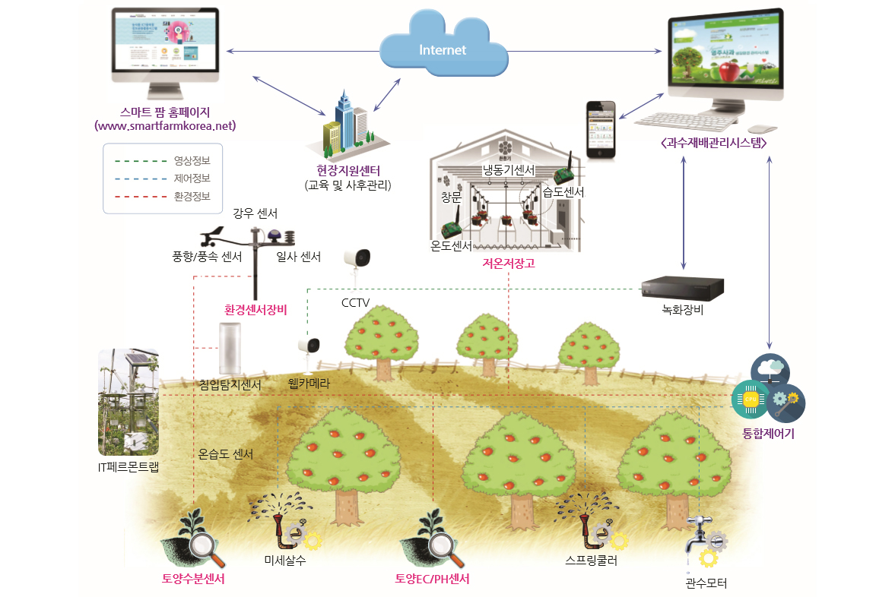

스마트 과수원은 다양한 정보들이 ICT를 이용해서 전달되고 사용된다. 이 정보들에는 위의 구성도에서 보는 것처럼 영상정보, 제어정보, 환경정보가 있다. 이 정보들의 이동 방향을 중심으로 위의 구상도에대해 설명해 보겠다.
영상정보는 과수원에 설치된 CCTV와 웹카메라를 통해서 찍힌 영상들이다. 이 영상들은 녹화장비에 모이게 된다.
과수원에 설치된 미세살수 장치, 스프링클러, 관수모터는 통합제어기 로부터 신호를 입력받아 작동하며, 혹은 스케줄 정보를 통해서 자동적으로 작동이 된다. 이 장치들은 작동의 결과나 경과의 정보를 통합제어기로 보내게 된다.
환경정보는 다양한 곳에서 많은 정보들이 보내지는데 그이유는 아무래도 과수원에서 재배되는 농작물의 상태를 정밀하게 확인하기 위해서인 것 같다. 환경센서장비의 풍향/풍속, 강우, 일사 센서와 과수원의 온습도 센서, 결로센서를 통해서 기후(날씨)정보가 보내지고, IT페르몬 트랩에서는 어느 시기에 대상해충이 가장 많이 발생하는지를 파악하여 방제시기 정보를 보낸다. 또한 토양 수분센서, 토양EC/PH센서에서는 토양의 상태 정보를 보내주며, 저온저장고의 온도센서, 냉동기센서, 습도센서는 저장고의 다양한 정보를 보내 과일의 관리를 쉽게 도와준다. 그리고 침입탐지 센서는 침입 유무 정보를 보내어 과수우너을 안전하게 지켜준다.
제어 정보와 환경정보는 통합제어기로 보내지고 통합제어기와 녹화장비는 자신들에게 온 정보들을 다시 종합적으로 시설운영관리시스템으로 보낸다. 그럼 사용자는 이 시스템을 통해서 스마트폰과 같은 전자기기들로 과수원을 쉽게 관리할 수 있다. 또한 시설운영관리시스템은 인터넷을 통하여 과일에 관련한 최적 기후조건이나 토양조건 등을 정보공동활용시스템으로 보내어 다른 과수원에서도 이를 활용할 수 있게 해준다.
| 통신방식의 종류 | 사용하는 것 |
|---|---|
| -유선방식 | RS-485, RS-232, Ethernet, 전력선통신 등 유선 통신방식 사용 |
| -무선방식 | IEEE802.4, Bluetooth, LoRa, WiFi, 3G, 4G 등 무선 통신방식 사용 |
| -유,무선 겸용 | 유무선 방식 혼합 또는 겸용 방식 |